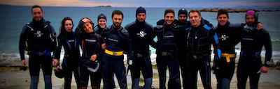

Hang out with your besties while you see the Great Barrier Reef! For 7 years in a row, we have been rated the number one company for enjoyable excursions to the great barrier reef by the international travel cooperative.
Every member of our staff has over 10 years of scuba experience and are each PADI Divemaster Certified. We offer instruction for certifications from PADI Junior Open Water to PADI Advanced Open Water Certification.
Please see below for our Package List including Certifications, Locations and services; Dates of Tours.
Certifications are accessible only after completion of the specific training to your certification, can you then reserve your license.
To reserve a time for your certification training, please refer to the list and times below:
PADI Junior Open Water training
PADI Open Water Training
PADI Advanced Open Water
PADI Dive Master - * By Appointment Only
Once you have finished your certification training, you MUST apply for a certification test by one of our instructors by contacting us to arrange an appointment. Tests usually take place on Monday afternoons.
Though many other companies and individuals have their favourite hangouts, we've found the best places to park our boats, with the most remarkable sights and the most spectacular coral.
Choose from one of three day-long packages:
Our warm, friendly and knowlegable staff are here to help you learn to best, but more so, to help you have fun in the water and explore the beauty of the GBR!

Choose from one of three day-long packages: